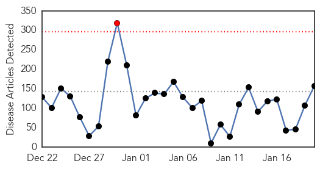

30 Day Trends
Web: 1 alerts, 0 warnings
Twitter: 0 alerts, 0 warnings
1108 new deaths (8626 total)
2349 new cases (21689 total)
Top Articles:
- 1.000
- All schools in Guinea that were closed amid Ebola to reopen on Monday
- 1.000
- Woman pulled off United flight at Newark does not have Ebola
- 1.000
- Plane passenger hospitalized in New Jersey with Ebola symptoms
- 1.000
- Mali declared Ebola free as West Africa continues to recover
- 1.000
- China’s Aid to Mali Helped Clean the West African Country of Ebola
- 1.000
- Ebola leaving thousands of children orphaned
- 0.999
- African Countries 'Vital' in Fight Against Ebola
- 0.999
- Traveler's Ebola scare triggered a now-familiar drill
- 0.999
- Traveler's Ebola scare triggered a now-familiar drill
- 0.999
- Traveler's Ebola scare triggered a now-familiar drill
- 0.999
- UN: African Countries 'Vital' in Fight Against Ebola
- 0.999
- Is this the beginning of the end for the Ebola outbreak in West Africa?
- 0.999
- World Vision joins $250m Ebola vaccine initiative as it continues to address stigma
- 0.999
- UN: African Countries 'Vital' in Fight Against Ebola
- 0.998
- Ebola Centers in Liberia Nearly Empty
- 0.998
- Outbreak Resembles 'Scattered Embers'
- 0.998
- Mahama says there are signs Ebola will be defeated
- 0.998
- Number of new Ebola cases declines: UNMEER head
- 0.998
- What Will It Take?
- 0.998
- Ebola crisis: Guinean priests beaten up over health fears
- 0.998
- Schools reopen as West Africa turns page on Ebola epidemic
- 0.997
- Will Liberia Be Ebola Free In February?
- 0.997
- Schools reopen in Ebola-hit Guinea; attendance 15%
- 0.997
- Davos: Western world ‘vulnerable’ to epidemics, warns Ebola expert
- 0.997
- Woman On Brussels To Newark Flight Did Not Have Ebola, Officials Say « CBS New York
- 0.996
- India-born Ebola fighter to watch Obama speech to Congress
- 0.996
- Are We Keeping Ebola Away?
- 0.996
- Airplane passenger with Ebola symptoms hospitalized in New Jersey
- 0.995
- Airplane passenger with Ebola symptoms hospitalized in New Jersey
- 0.994
- Ebola: 244 Patients Found Through House-to-House Search
- 0.994
- Airplane passenger does not have Ebola, state says
- 0.994
- Sick West African health worker not being transferred to long-term care in N.J., hospital says
- 0.994
- Sick Airline Passenger Flying From Sierra Leone Taken to Hospital
- 0.994
- Ebola tests at East Surrey Hospital for Africa aid worker
- 0.994
- Ebola Outbreak Orphaned Thousands Of Children--UNICEF : SCIENCE : Design & Trend
- 0.994
- Schools reopen as Ebola slows down in W. Africa
- 0.993
- Airplane Passenger with Ebola Symptoms Hospitalized in New Jersey
- 0.992
- SA nurses fearless as they face Ebola
- 0.992
- Sick Passenger Taken Off Flight in Newark After Traveling From Sierra Leone Does Not Have Ebola: Hospital
- 0.992
- Ebola worsens health system in Sierra Leone « Awoko Newspaper
- 0.990
- Best And Worst Ebola Fundraisers To Benefit Africans
- 0.989
- UCSF’s Ebola treatment center is a permanent commitment to treating highly infectious diseases
- 0.987
- Genetic Changes in Ebola Virus in West African Outbreak Could Hinder Potential Treatments
- 0.987
- JUJU! at Upstairs at the Ritzy raises money to fight Ebola
- 0.985
- The Economy in Africa Is Not Too Shaken Off by Ebola Virus
- 0.983
- No secret to curing Ebola in West Africa
- 0.981
- Danish PM visits Sierra Leone in solidarity
- 0.980
- Global Communities opens new burial site for Ebola victims near Monrovia
- 0.980
- Community gathers to protest violence
- 0.980
- Miscommunication keeps Guinea students from Ebola-free schools
Showing top 50 articles...
Top Tweets:
- 0.955
- Ebola Update: 21614 confirmed probable & suspected cases reported in 3 most affected countries with 8594 deaths. EbolaResponse
- 0.882
- UN Ebola chief calls for final funding push to defeat virus in west Africa: Ebola treatment cen...... http://t.co/LuQ0yo3QJW
- 0.830
- Even though Ebola cases have dropped in West Africa the virus continues to cripple these economies via http://t.co/OyRIdRAd86
- 0.827
- RT: Briefing by SRSG (11 am) on public health crisis from Ebola virus outbreak. WATCH live http://t.co/8tI6bW2bKu
- 0.794
- Critical Medivac capabilities for Ebola health care workers have been funded by's TackleEbola SOTU
- 0.643
- “Ebola Health Care workers need our support more than ever.” -Dune Ives at the TackleEbola SOTU breakfast.
- 0.588
- Je Suis Fighting against Ebola africaagainstebola ebola MakeHistoryCute http://t.co/76l8OWKFyA
- 0.549
- This epidemic is not over. The end of Ebola is only possible if the international community continues to come together. SOTU TackleEbola
- 0.514
- RT: .@jfreewright: the $10k my foundation invested in 1 Sierra Leone district was equal to their entire pre-Ebola health budg…
Web/News Articles
Tweets

Human Impact
Article Locations

Article Confidences